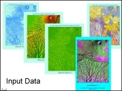
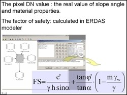
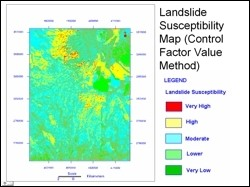

 Seismic and heavy rain induced landslide hazards are a major geohazard in large parts of El Salvador especially in Neave San Salvador. The January 13, 2001 earthquake (M7.6) triggered widespread damaging landslides in this area. The objective of this study was to estimate the landslide hazard susceptibility of Nueav San Salvador area using remote sensing images, topographic and geological maps, and field based information as primary input data.
Two different methods were employed to generate landslide hazard map. The first was a control factor value procedure where different weightages of seven control factors, viz. geological condition, slope angle, vegetation, annual rainfall, landuse, drainage and known landslide occurrences were used to estimate hazard susceptibility.
 The second was a factor of safety calculation method. Several analyses have been developed with the objective of providing a measure of the stability of a natural or manmade slope. The measure conventionally adopted is the so called factor of safety. The calculation of the factor of safety is based on a static analysis which predicts the shear stress associated with failure of the slope. The ratio of the actual shear strength of the soil to the shear stress at failure is the factor of safety. In landslide susceptibility zonation, the factor of safety for each pixel was determined using model maker routine of Erdas Imagine, as shown in the adjacent figure.
 Both procedures resulted in a landslide hazard zonation map with five susceptibility zones. However, the two output maps were considerably different. These differences have been attributed to assumption in weighting of the seven control factors, soil/rock property parameters and thickness of potential unstable soil/rock layers. Additionally, there was a lack of calibration data for geological condition and groundwater conditions in the area. Based on the limited field data available, the factor of safety method yielded superior landslide hazard zonation maps.